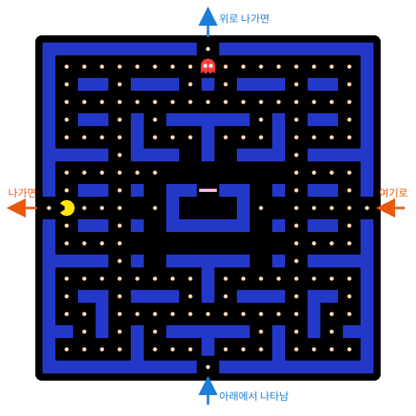
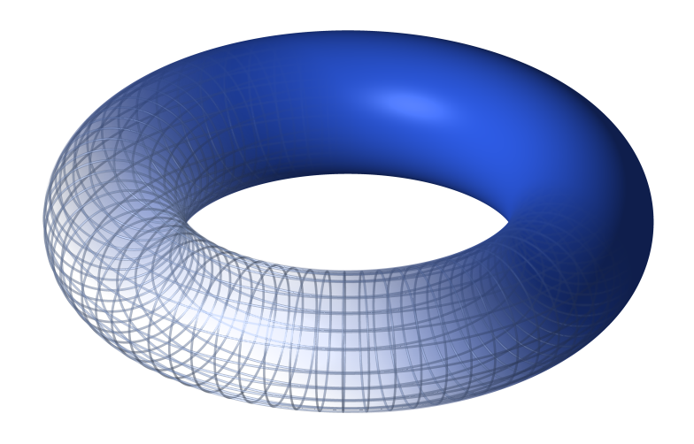

전이함수를 구면에서만 보았다. 차트 두 장이 겹치는 곳에서 좌표를 번역한다는 생각이 구면 말고 다른 공간에서도 그대로 통할까? 뜻밖에도 익숙한 곳, 오락실 게임 화면에 좋은 예가 있다.
역사: 화면 끝이 반대편 끝으로 이어진 게임
1979년 아타리의 게임 「애스터로이드(Asteroids)」에서는 우주선이 화면 오른쪽 끝으로 나가면 왼쪽 끝에서, 위쪽 끝으로 나가면 아래쪽 끝에서 다시 나타났다. 화면 가장자리에 벽을 세우는 대신 맞은편 가장자리와 이어 붙인 것이다. 이듬해 남코의 「팩맨(Pac-Man)」은 미로 양옆에 통로를 뚫어, 왼쪽 통로로 나간 팩맨이 오른쪽 통로로 들어오게 했다. 게임을 만든 사람들은 좁은 화면을 끝없이 넓어 보이게 하려고 이 방법을 썼지만, 수학으로 보면 이들은 평평한 직사각형 화면으로 전혀 다른 공간을 만든 셈이다.
감기 규칙과 두 화면

좌우와 위아래가 모두 이어진 화면을 생각하자. 오른쪽 끝과 왼쪽 끝을 붙이면 화면은 원통이 되고, 그 원통의 위쪽 끝과 아래쪽 끝을 다시 붙이면 도넛 표면이 된다.

토러스 (도넛 표면 / Torus) — 직사각형의 오른쪽 변과 왼쪽 변, 위쪽 변과 아래쪽 변을 각각 이어 붙여 만든 곡면. 팩맨이 실제로 사는 공간이다.
화면을 가로 0~10, 세로 0~10의 좌표로 읽으면 화면은 토러스의 차트 한 장이다. 이 차트를 φA라 하자. 그런데 화면 가장자리, 곧 이어 붙인 이음매 위의 점에는 좌표를 하나로 정할 수 없다. 오른쪽 끝의 10과 왼쪽 끝의 0이 같은 자리이기 때문이다. 그래서 차트 φA는 이음매를 뺀 열린 정사각형 안쪽만 맡는다.
빠진 이음매는 카메라를 옮긴 두 번째 화면으로 채운다. 화면 A를 가로·세로로 5칸씩 옮겨 찍은 화면 B를 만들면, 화면 A의 이음매가 화면 B에서는 한가운데 십자로 들어온다. 두 화면이 겹치는 곳에서 화면 A의 좌표를 화면 B의 좌표로 바꾸는 전이함수는 다음과 같다. 세로 좌표 y에도 같은 규칙을 쓴다.
φB∘φA−1:x↦{x+5x−5(x<5)(x>5)φAφBx,y화면 A의차트: 이음매를뺀화면, 좌표0<x,y<10화면 B의차트: 화면 A를가로⋅세로 5칸씩옮긴화면화면 A에서읽은가로⋅세로좌표
x=5인 세로줄은 화면 B의 이음매라서 겹치는 곳에 들어가지 않는다. 겹치는 곳은 두 화면의 이음매를 모두 뺀 네 조각이고, 조각마다 전이함수는 5를 더하거나 빼는 평행이동이라 무한히 미분 가능하다. 구면에서 반전이 하던 일을 토러스에서는 평행이동이 한다.
아래 도구에서 화면 A, 화면 B, 토러스를 함께 볼 수 있다. 팩맨을 끌거나 좌표를 직접 넣어 보고, 이음매를 넘을 때 어느 화면의 좌표가 튀는지 지켜보자.
문제 3 — 팩맨의 두 화면 좌표
계산 팩맨이 화면 A의 (8,3)에 있다. (1) 화면 B에서 팩맨의 좌표를 구하라. (2) 팩맨이 오른쪽으로 3칸 가면 화면 A와 화면 B의 좌표는 각각 어떻게 되는가? 어느 화면에서 좌표가 튀는가? (3) 화면 A와 화면 B 어디에도 나타나지 않는 점이 있는가? 있다면 모두 찾아라.
풀이를 마친 뒤 위 도구의 「문제 3 불러오기」를 누르고, 화면 A 좌표를 직접 넣거나 → 버튼으로 한 칸씩 옮기면서 자기 답과 비교해 보자.
도구에 (8,3)을 넣어 보면 화면 B의 팩맨이 가로 3, 세로 8에 있어요. 민준 학생, 13칸째가 없으면 팩맨은 어디로 가죠?
김민준
10에서 한 바퀴 돌아서 3이요… 결국 서연이 답이랑 같네요. 원형 버퍼에서 인덱스에 % n 안 붙였다가 배열 밖을 읽은 거랑 똑같은 실수예요.
선생님
(2)로 가 봅시다. 오른쪽으로 3칸 가면요?
김민준
화면 A에서는 8→9→10을 지나서 (1,3)이 돼요. 화면 B에서는 3→6이니까 (6,8)이고요. 화면 A에서는 가로 좌표가 9 다음에 갑자기 0 근처로 떨어져요.
이서연
도구에서 → 버튼을 세 번 누르니까 화면 A의 자취만 오른쪽 끝에서 끊기고 ✕가 찍혀요. 화면 B의 자취는 한 줄로 이어지고요. 토러스 위에서는 당연히 한 줄이고.
선생님
팩맨은 매끄럽게 걸었는데 화면 A의 숫자가 튄 거예요. 튄 건 팩맨이 아니라 화면 A의 이음매예요. 그 자리를 지날 때는 화면 B로 보면 되고요. 그럼 (3), 두 화면 어디에도 없는 점은요?
이서연
화면 A에는 이음매 두 줄, 가로 0인 세로줄과 세로 0인 가로줄이 빠져요. 화면 B에는 화면 A 기준으로 가로 5인 세로줄과 세로 5인 가로줄이 빠지고요. 두 화면에 다 없으려면 빠진 줄끼리 만나야 하니까… 가로 0이면서 세로 5인 점, 가로 5이면서 세로 0인 점, 두 개예요.
김민준
잠깐, 가로 0, 세로 5면 화면 왼쪽 끝 한가운데잖아요. 팩맨 그림에서 좌우 통로 입구예요! 가로 5, 세로 0은 위아래 통로 입구고요. 게임에서 제일 자주 지나다니는 자리가 두 화면 어디에도 안 보이는 거네요.
선생님
도구에 (0,5)를 넣어 보면 두 화면 모두에서 팩맨이 점선 동그라미로만 남아요. 그래서 토러스를 빠짐없이 덮으려면 화면이 하나 더 필요해요. 예를 들어 화면 A를 가로·세로 2.5칸씩 옮긴 화면 C는 이음매가 2.5에 있으니 통로 입구 두 점을 모두 담아요.